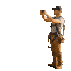

Optional supporting line. Two lines at most, then let the bullets carry the detail.
One line on the outcome, in the words the trade uses.
Three or four lines of body copy. Write to "you", lead with the outcome, and use the words the trade actually uses.
Three or four lines of body copy. Keep both columns to a similar length so the slide stays balanced.
The customer's words, unedited, two lines at most so it stays quotable.
One line on what Sense does in the background, in plain language.
